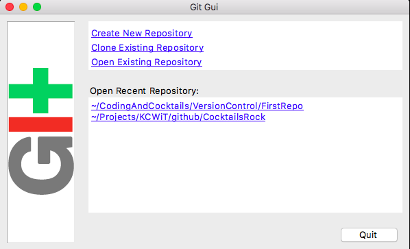

Part 1: Exploring the Interfaces
If you use Windows, open Git Bash, or if you use a Mac, open iTerm2.
Type
cd CodingAndCocktailsto navigate to yourCodingAndCocktailsdirectory in your home directory.Type
mkdir VersionControlto make a new folder for this month. Then typecd VersionControlto move into that folder.For a refresher on command line, check out the worksheet from last month: bit.ly/CnCMarWork.
Type
mkdir FirstRepoto make a repository inside your VersionControl directory your directory structure should now look like this:CodingAndCocktails | |--VersionControl | |--FirstRepoType
git gui. This will open the GUI (Graphical User Interface) to interact with Git. Click Create New Repository and Browse to your FirstRepo directory and choose it.
Click Create This will turn FirstRepo into a Git repository and bring up the GUI , which you may explore but we will not go into detail in class.
To return to the command line either quit out of Git GUI or in iTerm2 or Git Bash, press the
ctrl+cbuttons to return to your prompt.In Google Chrome, navigate to Github.com and log into your account. Take a look around. View your profile by selecting that option from the drop down menu in the upper right. This will be more exciting to look at once we have a bit more GitHub interaction.